| Volume 1, Year 2014 - Pages 9-15 | View PDF (Full-text) |
| DOI: 10.11159/jffhmt.2014.002 | Linked References |
| ISSN: 2368-6111 | |
Numerical Solution for the Boussinesq Type Models with Application to Arterial Flow
Alexander S. Liberson, Jeffrey S. Lillie, David A. Borkholder
Rochester Institute of Technology, 1 Lomb Memorial Drive, Rochester, NY, USA
asleme@rit.edu; jsliee@rit.edu
Abstract- A family of classical Boussinesq system of nonlinear wave theory is presented in a form of conservative equations supplemented by Riemann solver, which is a fundamental block in the Godunov frame formulation of flow problems. The governing system simulates different physical phenomena, such as propagation of a small amplitude waves on a surface of water, or pulse wave propagation in compliant thin walled arterial systems. While the first model is for verification purpose only, pulse wave propagation through the junction of thin walled elastic branches is of primary interest. The inertial effects associated with transversal motion of the wall are introduced, affirming the dispersive nature of pulsating waves. The problem of accounting for branching and possible discontinuity of wall properties is addressed. Preliminary analysis is presented which leads to the correct jump conditions across bifurcated area. As a result, the model accurately describes the formation of transmission and reflection waves at bifurcation, including effects of discontinuities. The Riemann solver supplies the inter cell flux and junction fluxes, based on conservation of volume, momentum and energy, with account of losses associated with the flow turn angle at bifurcation. An implicit monotonic total variation diminishing (TVD) scheme, second order accurate in time and space has been applied for the analysis of solitary wave solution in bifurcated arteries. Numerical results are in a good agreement with the known analytical and numerical solutions reported elsewhere. Based on direct computational analysis the inverse solution was obtained, calculating the local elastic properties of the arterial wall, using typical diagnostic measurements. Mathematical modelling presented in this work leads to a physiological understanding and interpretation of diagnostic measurements of the wave forms of a blood pressure, flow rate and an artery wall deflection.
Keywords:Boussinesq type waves, Traveling waves, TVD scheme, Pulse wave
© Copyright 2014 Authors - This is an Open Access article published under the Creative Commons Attribution License terms. Unrestricted use, distribution, and reproduction in any medium are permitted, provided the original work is properly cited.
Date Received: 2014-05-17
Date Accepted: 2014-008-29
Date Published: 2014-10-07
Nomenclature
| TVD | Total variation diminishing |
| CFD | Computational fluid dynamics |
| PWV | Pressure wave velocity |
| c | speed of propagation |
| cMK | Moens-Korteweg speed of propagation |
| A | Cross sectional area |
| µ | Cross sectional axial flow velocity |
| η | Circumferential wall strain |
| p | Static pressure |
| ρ | Fluid density |
| E | Elastic modulus |
| h | Wall thickness |
| r | radius |
| Au | Peak flow velocity |
| AQ | Peak volume flow rate |
| Ap | Peak pressure |
1. Introduction
Consider a broad family of Boussinesq type dispersive wave models [1] presented in a conservative form
where dot above variable means time derivative, subscripts are partial derivative by the axial coordinate. The equations (1,2) describe a diverse range of physical phenomena, for example acoustics models [2], nonlinear Korteweg de Vries or Benjamin-Bona-Mahony dispersive waves models [2,3], propagation of small amplitude waves on the surface of incompressible flow in the passage of the finite depth [2], pulse propagating incompressible flow in elastic or viscoelastic segments [4-7], and others [2,3].
A well-developed high resolution computational fluid dynamic (CFD) technique, capturing the physics of a wave structure by applying the relating Riemann solver, is presented. Convective terms have been discretized by the third order implicit finite volume approximation, whereas diffusive and dispersive terms have been approximated based on second order finite difference implicit scheme. To avoid numerical oscillations across discontinuities of solution, a total variation diminishing (TVD) scheme was applied [5]. The proposed employment of implicit solver is justified by significant restriction imposed on a time step by alternative explicit scheme in case of stiff boundary value problems.
The problem of accounting for topological bifurcation and possible discontinuity of wall properties is addressed. Preliminary analysis is presented which leads to the correct jump conditions across bifurcated area. The Riemann solver supplies the inter cell flux and junction fluxes, in case of bifurcation, upheld by conservation of volume, momentum and energy flow rates. Based on direct computational analysis the inverse solution was obtained, calculating the local elastic properties of the arterial wall using typical diagnostic measurements.
2. Dynamics of Incompressible Flow in Elastic Vessel
Conservation of mass and momentum results in the following system of one dimensional equations (A=A(x,t)-cross sectional area of the vessel, u=u(x,t) - averaged flow velocity, p=p(x,t) - static pressure, f - the source friction term, ρ - density of incompressible fluid) [4].
For the thin walled elastic membrane vessel in a transversal motion, pressure - strain relationship is maintained by dynamic equilibrium condition (- density of the wall,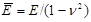, where E elastic modulus, ν-Poisson coefficient, η circumferential strain, h thickness of the vessel, r0 radius of unstressed vessel)
Noting, that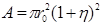, the total system of equations can be presented in the following non-conservative form
2.1. Solitary Waves Solution
It is well known that Boussinesq equations possess solitary wave solution [1,2]. Substituting solution in a form of a traveling wave , where 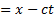, into (6),(7),(8), and integrate, one can obtain (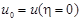, where prime means derivative by X)
A
non-linear momentum equation is obtained by multiplying equation (10) by  and integration to yield
and integration to yield
Setting Aη=maxX(η(X)), AP=maxX(p(X)), Au=maxX(u(X)), and using (9) to calculate integrals in equation (11), one can find speed of a wave propagation (pressure wave velocity (PWV)) in a form
where: 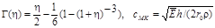is Moens-Korteweg speed of propagation. Equation (12) presents the pressure wave velocity of the forward and backward solitary wave propagation. Based on asymptotic expansion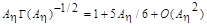, it can be reduced to the simplified form
The increment
quantifies the correction to the classical Moens-Korteweg model, introduced by the present theory. While the linear model predicts all waves travel with the Moens-Korteweg speed (), accounting for nonlinearities predicts speed of propagation which exceeds by 10-15 % within the physiological range of transmural pressure.
The
speed - amplitude relationship for the peak of flow velocity, volume flow rate 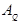, and pressure  are
retrieved from equations (9), (10) for one way
wave propagation
are
retrieved from equations (9), (10) for one way
wave propagation
shows dependence of wave velocity propagation on wall deflection and pressure amplitudes. All quantities are presented in a non-dimensional form, being normalized to cMK for all velocities, to for the pressure, to the radius r0 of the unstressed tube for the normal deflection.
Results show that the speed of propagation strongly depends on the amplitudes of pressure waves. Not mentioning theoretical importance, equations (15-17) are useful for verifying numerical accuracy of CFD based simulation of solitary wave.

2.2. Numerical Approach
By inserting (5) into (3-4) we obtain the system written in the matrix conservation form
The unknown vector of primitive variables 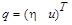should satisfy partial differential equation (18) supplemented with relating initial and boundary conditions. To develop implicit procedure of integration with respect to time we invoke an asymptotic differential equation relating the unknown vector to its increment with respect to time on different time layers.
Here,
n is the time layer number, 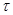is
the time step,  -scheme parameter.
Linearizing (18), we obtain
-scheme parameter.
Linearizing (18), we obtain
We substitute expressions for and 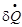given by (18), (19), (21), (22) respectively into (20) to obtain a differential equation for 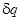, in which the coefficients and the right hand side are calculated in terms of variables on the preceding time layer.
To construct an implicit finite difference scheme, we express the flux Jacobian matrix as the difference between two nonnegative definite matrices defined as 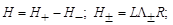
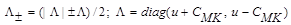
To approximate the differential equation in computational domain, we construct a uniform grid with a grid size h. Integer index corresponds to the cell center, fractional (half integer) to the cell face. Right and left finite difference operators are defined as follows: 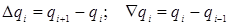. As a result equation (23) is replaced by the following finite difference counterpart
The finite difference approximation of RHSi is defined as
where fluxes are evaluating according to TVD procedure using limited extrapolations of primitive variables described with details by [6-9]
The general Riemann problem for discontinuity breakdown is then utilized to evaluate the inviscid fluxes 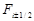on the sides of each cell. The “viscous” fluxes are calculated using standard central differences [7]. The convective part of implicit operator is achieved by using the upstream differences with consideration of the sign of the characteristic speed (eigenvalues of the Jacobean matrix). Implicit boundary conditions for variations of variables are incorporated. The basic solver strategy employs a Gauss-Seidel relaxation procedure. In addition, Newton sub iterations are used to achieve convergence at each global time step reducing linearization errors. The procedure is of second order accurate in both space and time and provides stable convergence for time dependent hyperbolic equations without any artificial dissipation. Further details of numerical technique can be found in [8-13].
3. Numerical Experiments
3.1. Scalar nonlinear waves
Consider the one dimensional non-steady viscous Burgers' equation
The Riemann problem with an initial discontinuity at x=0 can be expressed as a solution of the corresponding "inviscid" Burgers equation () with the initial state
where the subscripts L and R denote the left and right regions respectively. As it is known the corresponding solution U consists of shock and rarefaction waves [2], propagating from discontinuity
For the first example the Burgers' equation was solved for a few viscosity coefficients ε=0.25, 0.1, 0.05, 0.01, using 100 cells, with initial conditions 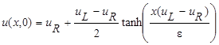, where 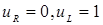. In Fig. 2 results are compared with exact solution found in [2]. Courant number up to 30 does not practically affect an accuracy of results. A snap shot of evolving sinusoidal profile is shown in Fig. 2, where viscosity coefficient is low ε=0.003 (stiff problem). As expected no oscillations are observed using TVD formulations.
| (a) 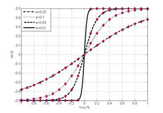 |
(b) 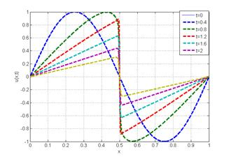 |
3.2. Flow in elastic arterial segments
Fig 3 shows dependence of a peak displacement amplitude on the flow velocity amplitudes based on the traveling wave model (15-17) and TVD approach. This solution serves as a test for the TVD model applied to the flow simulation inside elastic cylindrical cylinder. The downstream condition is specified as a non-reflected boundary condition, by setting to zero the backward moving Riemann invariant. On a left boundary the sinusoidal profile for the velocity was specified. We used Courant number CFL= 2, 100 cells along the tube, ϴ=0.5
3.3. Flow in junction
Consider junction element of bifurcation tree shown in Fig.4. We denote the parent branch by an index 1, and two daughter branches by the indices 1 and 2. Variables related to the cell faces are noted by capital letters, the ones related to the cell interior - by low case letters. We have six unknown variables, pressure and velocity values associated with cell faces: 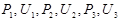. The cell faces deflections 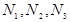are derivatives of the corresponding pressure and velocities values. The lower case letter variables are known at each step of iteration process. The total set of 6 equations to calculate 6 unknowns comprises three conservation laws for the flow rate and momentum (- losses associated with the area jump and a flow direction change inside junction)
and three equations describing the transfer of forward and backward propagating Riemann invariants [4]
Analytical solution can be obtained based on a linearized form of the governing system (30), (31), which was used in the present work to calculate fluxes. For general purpose the linearized solution could be used as an initial approach of solving (30), (31) by iterations. We consider fork type symmetric bifurcate as shown in Fig.4 where diameter of the parent branch is 2cm, whereas the peripheral branches are twice thinner. Elastic modulus is 1MPa, thickness 1.6mm. Boundary conditions have been specified as a flow at the inlet section to the system, (proximal flow, Fig. 4 ), and a pressure at each exit section, (distal pressure, Fig. 4). Calculations used 100 cell, Courant number CFL=2; ϴ=0.5. Calculated proximal pressure and a distal flow velocity, will be compared with in-vitro experimental testing data in future work.
3.4. Inverse problem of hemodynamics
Use of the model to solve the inverse problem of hemodynamic results in calculation of the local elastic modulus by non-invasively measuring pressure wave velocity, peak pressure, normal deflection or ejection time and ejection volume. To determine elastic modulus we use its contour plot in terms of PWV and ejection time built based on equations (12) or (13). For the specific values of an ejection time and a peak pressure we simply identify elastic properties with the nearest contour line, as shown in Fig. 5a. All three combinations of PWV and ejection time result in the quantification for elastic modulus of about 1.04MPa as it is shown in Fig 5b.
| (a) |
(b) |
4. Conclusion
Analytical and numerical solutions are presented and verified for the one-dimensional direct and inverse problems of fluid dynamics in an elastic thin-walled tube. Based on direct computational analysis the inverse solution was obtained, calculating the local elastic properties of the arterial wall using typical diagnostic measurements.
References
[1] Bona J.L., Chen M., Saut J.C., Boussinesq equations and other systems for small-amplitude long waves in nonlinear dispersive media. I. Derivation and linear theory, J. Nonlin. Sci. 12 (2002) 283-318. View Article
[2] Whitham G.B., Linear and Nonlinear Waves, John Wiley & Sons (1999), 636pp. View Book
[3] Karpman V.I., Non-linear waves in dispersive media, Elsevier Science & Technology, 1974,186 pp. View Book
[4] Sherwin S., Franke V., Peiro, I., Parker, K., One dimensional modeling of a vascular network in space time variables, Journal of Engineering Mathematics 47 (3-4) (2003) 217-250. View Article
[5] Formaggia L., Lamponi D., Quarteroni A., One-dimensional models for blood flow in arteries, J. Eng. Math. 47 (2003) 251-276. View Article
[6] J. Alastruey, Numerical assessment of time-domain methods for the estimation of local arterial pulse wave speed. Journal of Biomechanics, 44(5), p. 885-891, 2011. View Article
[7] J. Alastruey, K. H. Parker and S.J. Sherwin, Arterial pulse wave haemodynamics, Proc. BHR Group's 11th International Conference on Pressure Surges, Lisbon, Portugal, Oct , 2012. View Article
[8] Chakravarthy S. R., The versatility and reliability of Euler solvers based on high-accuracy TVD formulations, AIAA Paper 86- 0243. View Article
[9] Liberson A.S., Hesler S.H., Mc.Closkey T.H., A unified CFD based approach to a variety of condensation processes in low pressure steam turbines. In Proceeding of the EPRI/VGB Conference, Freiburg, Germany, June 1999, EPRI, TR-114837, August 2000, pp. 9-1-9-13.
[10] Liberson A.S., Hesler S.H., Mc.Closkey T.H., Inviscid and viscous numerical simulation for non-equilibrium spontaneously condensing flows in steam turbine blade passages. PWR-Vol.33, 1998 International Joint Power Generation Conference. Vol.2, ASME 1998, pp.97-105.
[11] Kosolapov Yu.S., Liberson A.S., An implicit relaxation method for computation of three-dimensional steady flow of spontaneously condensing steam, Comput. Math. Math. Phys. 37, 6, (1997) 739-747. View Article
[12] Yee H. C., Harten A., Implicit TVD schemes for hyperbolic conservation laws in curvilinear coordinates, AIAA Journal, Vol. 25, No. 2 (1987), pp. 266-274. View Article
[13] Chakravarthy S R., Relaxation methods for unfactored implicit upwind schemes, AIAA Paper 84-0165. View Article